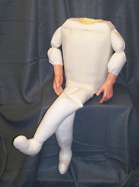
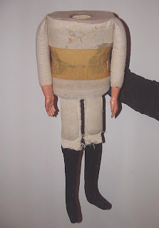

Not a good job ...
12/31/2009
{kind=link}

From Jim BurkeHi Clinton, I received the new body (right) yesterday for "Miguelito", and I need to tell you that you did not do a good job.....you did a FABULOUS JOB! Workmanship was superb, truly professional. The way you packed the body for shipping was also professionally done--I don't know whether you did it personally or had someone else pack it but it gives the purchaser a wonderful impression even before the bubble wrap is removed. Everything is great!
I know that you are busy, but I wanted to give you a very brief history of this puppet. When we left for the mission field in Colombia, South America, in 1978 I took a professional figure with me from your studio. I think it came from the workshop in California, and the original name it was sold under was Homer. It had a tooth proceeding from underneath the upper lip. It also had a deer skin mouth.
Unfortunately, that figure was stolen [not an uncommon occurrence in Colombia]. My father, who is now 91, came to visit us and brought a small figure that you have sinced identified as Hal from Madeline Maher. It was not in good condition---but I ordered a wig from your studio for the figure, and I used it in Colombia, even carrying it one time in my saddle bag as I rode a horse to a mission point in the Ande mountains. I gave him the name of Miguelito "Little Mike" in English). I used the figure for years after returning to the States with great response wherever I went. It seemed that no matter what type of program I gave (I am also a juggler, magician) it was always acclaimed to be the favorite part of the program. I did school programs in New Mexico and parts of Texas on character and it was one of the featured presentations.
{kind=link}

After several years I had you refurbish the head (and what a professional job that was! You even added the raising eye brows without charge. I still don't know why I didn't have you do the body then). Clothes continued to cover up a body that was in very poor condition (photo left).I have other figures now, of varied sizes, but Miguelito continues to be one of the favorites. This goes to show that the size of the figure does not determine the audience response. The personality that the ventriloquist gives to the figure and how well the ventriloquist makes the figure come to life does.
Thanks for extending years to the use of this special figure, Miguelito Milkweed.